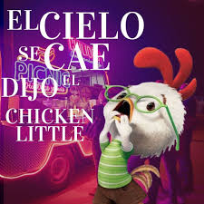
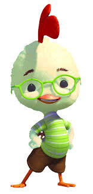
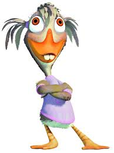

Chicken Little es un pequeño pollito que causa pánico en su pueblo cuando anuncia que el cielo se está cayendo. Un año después, intenta recuperar su reputación uniéndose al equipo de béisbol. Pero cuando realmente cae un pedazo del cielo, él y sus amigos deberán demostrar que no estaba tan equivocado…

Chicken Little: El protagonista valiente pero torpe que quiere demostrar su valor.

Abby patosa (la patito feo):Su mejor amiga, siempre lo apoya.